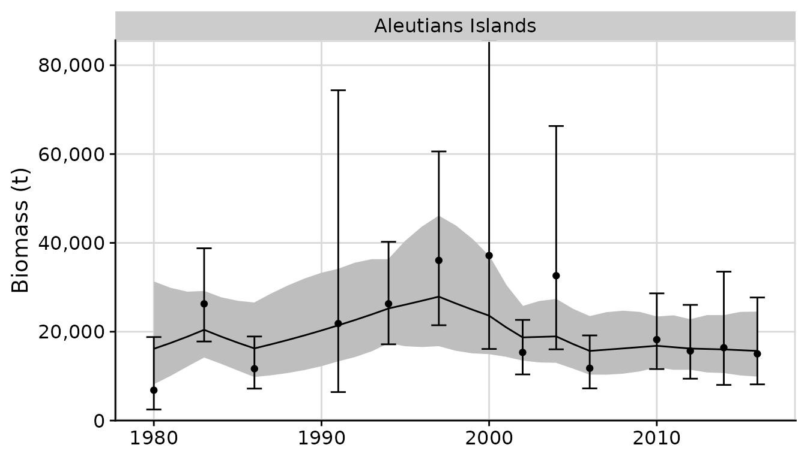
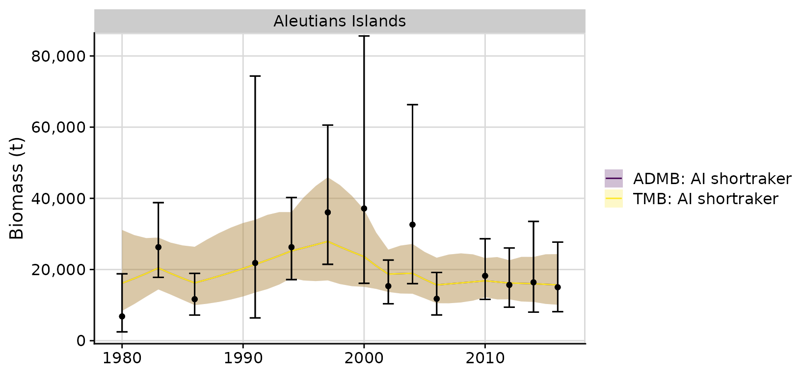
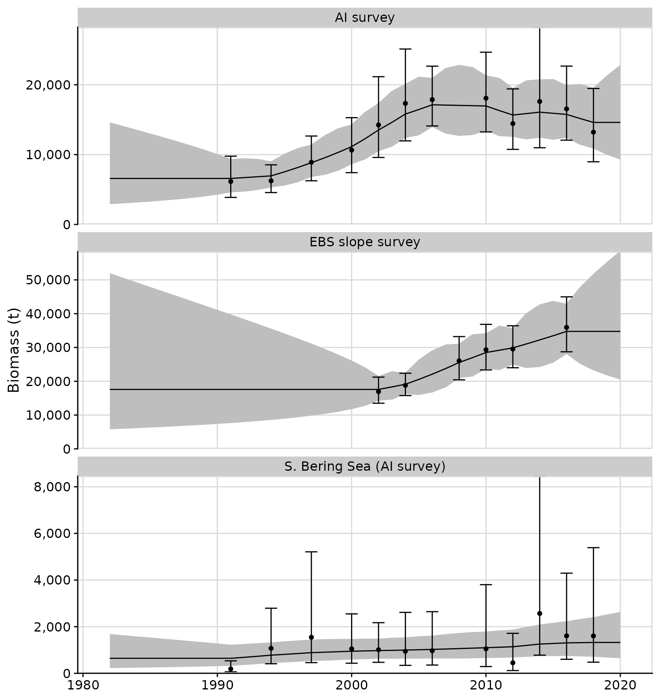
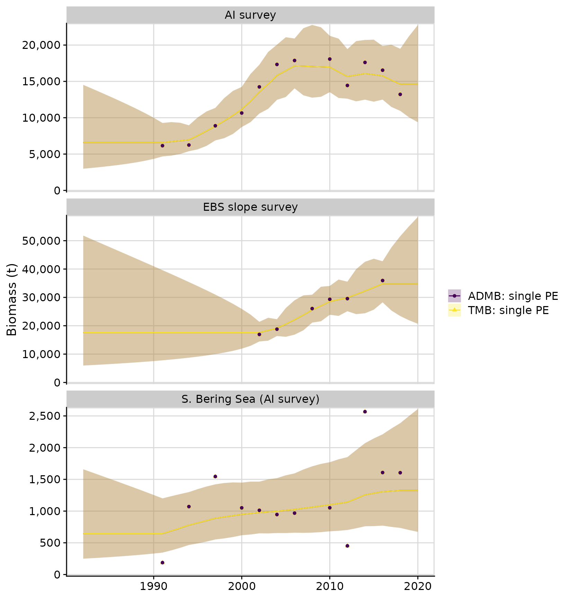
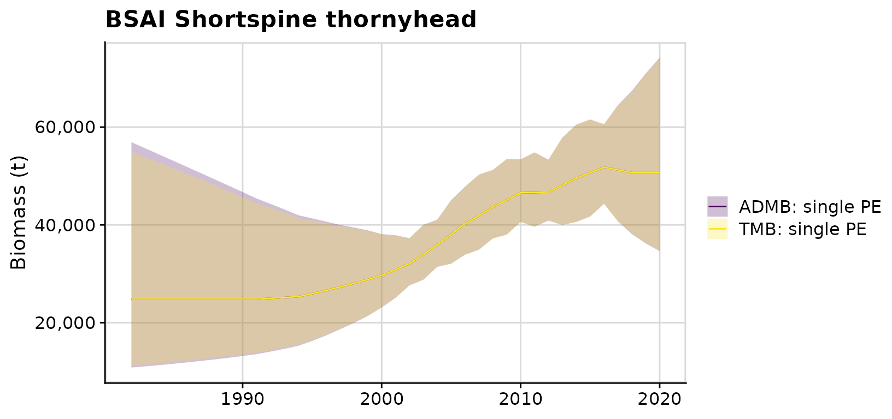
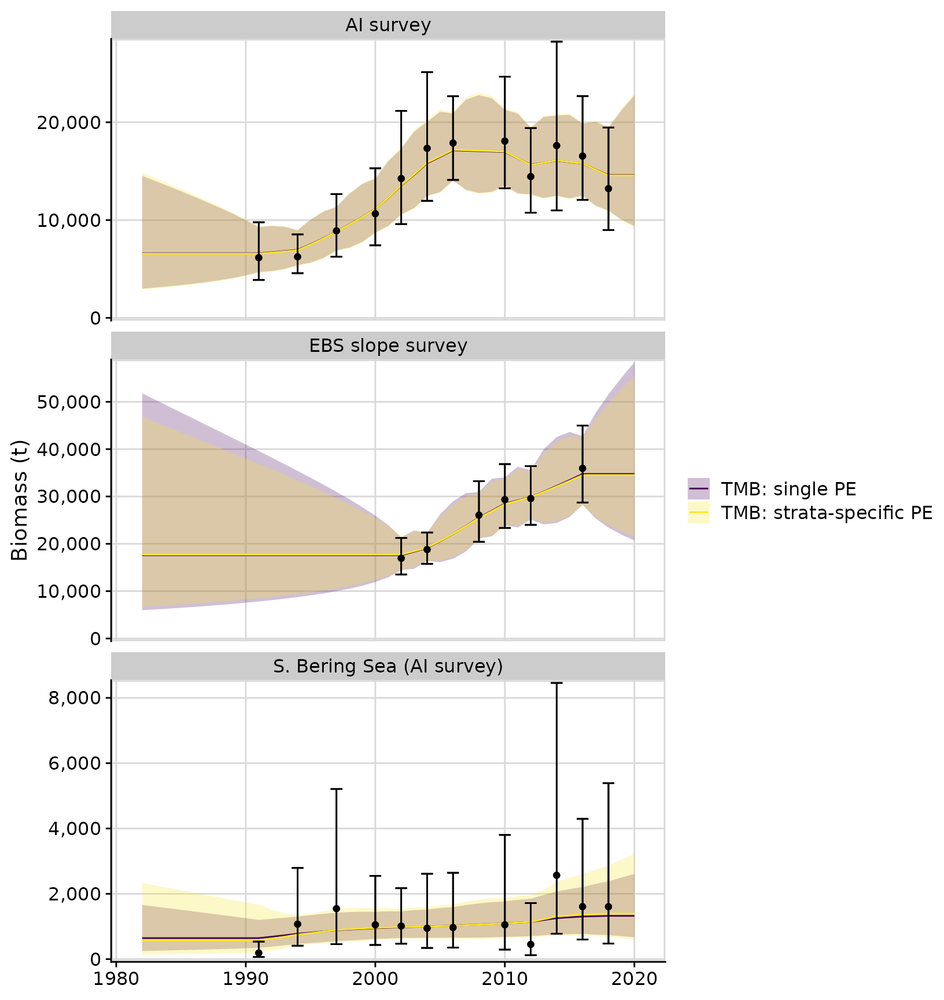

library(rema)
library(ggplot2)
library(dplyr)
library(knitr)
ggplot2::theme_set(cowplot::theme_cowplot(font_size = 14) +
cowplot::background_grid() +
cowplot::panel_border())In this series of vignettes we walk through several examples of how
to prepare and fit a suite of random effects (RE) models for biomass
estimation and apportionment using the rema package.
The rema workflow:
Load
remaand data. The user can read biomass or other abundance index data from file (e.g. .csv file), or they can use therwout.repreport file from the ADMB version of the RE model usingread_admb_re().Specify model structure and assumptions using
prepare_rema_input(). This function allows users to quickly transition from a single to two survey model, specify alternative process error structures, add likelihood penalties or priors on parameters, and evaluate alternative assumptions about zero biomass observations.Fit the specified REMA model using
fit_rema()and determine whether the model has met basic convergence criteria (e.g., Hessian is positive definite, a maximum gradient component approximately equal to zero).Extract
remamodel output into clean, consistently formatted data frames usingtidy_rema(). The user can visualize this model output usingplot_rema(), or quickly format it into tables for a report.Compare alternative REMA models and conduct model selection using
compare_rema_models(). Output from this function includes a table of Akaike Information Criteria (AIC) when appropriate, figures, and tidied data frames. This function also accepts model output from the ADMB version of the RE model for easy comparison to past models.
Taken together, these functions allow R users to quickly fit and interrogate a suite of simple statistical models in TMB without needing software-specific training or expertise.
Example 1: Univariate random effects (RE) model with a single survey and stratum
This example uses Aleutian Islands shortraker
(aisr_rwout.rep) and fits to NMFS bottom trawl survey
estimates.
- Read in the
rwout.rep, a custom report file generated by the ADMB version of the random effects model.
# ?read_admb_re
admb_re <- read_admb_re(filename = 'aisr_rwout.rep',
# optional label for the single biomass survey stratum
biomass_strata_names = 'Aleutians Islands',
model_name = 'ADMB: AI shortraker')
names(admb_re)
#> [1] "biomass_dat" "cpue_dat" "model_yrs"
#> [4] "init_log_biomass_pred" "admb_re_results"
kable(admb_re$biomass_dat)| strata | year | biomass | cv |
|---|---|---|---|
| Aleutians Islands | 1980 | 6829.3 | 0.5531111 |
| Aleutians Islands | 1983 | 26275.5 | 0.2006878 |
| Aleutians Islands | 1986 | 11667.2 | 0.2505718 |
| Aleutians Islands | 1991 | 21835.4 | 0.6916255 |
| Aleutians Islands | 1994 | 26284.4 | 0.2198947 |
| Aleutians Islands | 1997 | 36058.3 | 0.2694324 |
| Aleutians Islands | 2000 | 37151.8 | 0.4460828 |
| Aleutians Islands | 2002 | 15342.0 | 0.2009741 |
| Aleutians Islands | 2004 | 32611.6 | 0.3743298 |
| Aleutians Islands | 2006 | 11780.6 | 0.2522081 |
| Aleutians Islands | 2010 | 18223.7 | 0.2336468 |
| Aleutians Islands | 2012 | 15667.7 | 0.2636677 |
| Aleutians Islands | 2014 | 16400.5 | 0.3771796 |
| Aleutians Islands | 2016 | 15024.0 | 0.3199997 |
- Prepare REMA model inputs using the
admb_redata object.
# ?prepare_rema_input
input <- prepare_rema_input(model_name = 'TMB: AI shortraker', admb_re = admb_re)
names(input)
#> [1] "data" "par" "map" "random" "model_name"
#> [6] "osa" "biomass_dat"The input$data, input$par,
input$map, and input$random are used by
TMB to fit the REMA model. The other objects are used by
other functions to process model results or conduct residual
analyses.
Data could alternatively be entered into
prepare_rema_input() using the biomass_dat
argument:
# (not run)
input <- prepare_rema_input(model_name = 'tmb_rema_aisr', biomass_dat = admb_re$biomass_dat)- Fit REMA model
# ?fit_rema
m <- fit_rema(input)
#> Model runtime: 0.1 seconds
#> stats::nlminb thinks the model has converged: mod$opt$convergence == 0
#> Maximum gradient component: 1.90e-11
#> Max gradient parameter: log_PE
#> TMB:sdreport() was performed successfully for this model- Get tidied model output and plot results
Note that the 95% confidence intervals of the observations (i.e.,
obs_lci and obs_uci in
output$biomass_by_strata are based on the assumption of
normality in log-space; therefore, they are asymmetric on the arithmetic
scale.
# ?tidy_rema
output <- tidy_rema(rema_model = m)
kable(output$parameter_estimates) # estimated fixed effects parameters| model_name | parameter | estimate | std_err | lci | uci |
|---|---|---|---|---|---|
| TMB: AI shortraker | process_error | 0.1557776 | 0.1044475 | 0.0418584 | 0.5797328 |
| model_name | strata | variable | year | log_pred | sd_log_pred | pred | pred_lci | pred_uci | obs | obs_cv | log_obs | sd_log_obs | obs_lci | obs_uci |
|---|---|---|---|---|---|---|---|---|---|---|---|---|---|---|
| TMB: AI shortraker | Aleutians Islands | biomass_pred | 1980 | 9.689900 | 0.3344752 | 16153.63 | 8386.182 | 31115.44 | 6829.3 | 0.5531111 | 8.828978 | 0.51664 | 2480.912 | 18799.27 |
| TMB: AI shortraker | Aleutians Islands | biomass_pred | 1981 | 9.768171 | 0.2704639 | 17468.78 | 10281.186 | 29681.23 | NA | NA | NA | NA | NA | NA |
| TMB: AI shortraker | Aleutians Islands | biomass_pred | 1982 | 9.846441 | 0.2155808 | 18891.00 | 12380.902 | 28824.23 | NA | NA | NA | NA | NA | NA |
| TMB: AI shortraker | Aleutians Islands | biomass_pred | 1983 | 9.924711 | 0.1784564 | 20429.01 | 14399.421 | 28983.43 | 26275.5 | 0.2006878 | 10.176392 | 0.19871 | 17799.538 | 38787.63 |
| TMB: AI shortraker | Aleutians Islands | biomass_pred | 1984 | 9.848307 | 0.1919367 | 18926.28 | 12992.373 | 27570.34 | NA | NA | NA | NA | NA | NA |
# ?plot_rema
plots <- plot_rema(tidy_rema = output, biomass_ylab = 'Biomass (t)') # optional y-axis label
plots$biomass_by_strata
- Compare with ADMB RE model results
# ?compare_rema_models
compare <- compare_rema_models(rema_models = list(m),
admb_re = admb_re,
biomass_ylab = 'Biomass (t)')
compare$plots$biomass_by_strata
Example 2: Multivariate random effects model (REM) with a single survey and multiple strata
This example uses Bering Sea and Aleutian Islands shortspine
thornyhead (bsaisst_rwout.rep) and fits to the NMFS EBS
slope and AI bottom trawl survey estimates. The original ADMB model has
a single, shared process error (PE) over the three strata. This example
demonstrates how to define alternative PE structures, and how to u to
perform model selection using AIC.
admb_re <- read_admb_re(filename = 'bsaisst_rwout.rep',
biomass_strata_names = c('AI survey', 'EBS slope survey', 'S. Bering Sea (AI survey)'),
model_name = 'ADMB: single PE')
# the original ADMB model shared PE across all strata
input1 <- prepare_rema_input(model_name = 'TMB: single PE',
admb_re = admb_re,
PE_options = list(pointer_PE_biomass = c(1, 1, 1)))
m1 <- fit_rema(input1)
#> Model runtime: 0.1 seconds
#> stats::nlminb thinks the model has converged: mod$opt$convergence == 0
#> Maximum gradient component: 9.81e-10
#> Max gradient parameter: log_PE
#> TMB:sdreport() was performed successfully for this model
output <- tidy_rema(rema_model = m1)
kable(output$parameter_estimates) # estimated fixed effects parameters| model_name | parameter | estimate | std_err | lci | uci |
|---|---|---|---|---|---|
| TMB: single PE | process_error | 0.121168 | 0.0286548 | 0.0762236 | 0.1926136 |
| model_name | strata | variable | year | log_pred | sd_log_pred | pred | pred_lci | pred_uci | obs | obs_cv | log_obs | sd_log_obs | obs_lci | obs_uci |
|---|---|---|---|---|---|---|---|---|---|---|---|---|---|---|
| TMB: single PE | AI survey | biomass_pred | 1982 | 8.792938 | 0.4034013 | 6587.561 | 2987.781 | 14524.48 | NA | 9.000024 | NA | NA | NA | NA |
| TMB: single PE | AI survey | biomass_pred | 1983 | 8.792938 | 0.3847739 | 6587.561 | 3098.878 | 14003.76 | NA | 9.000024 | NA | NA | NA | NA |
| TMB: single PE | AI survey | biomass_pred | 1984 | 8.792938 | 0.3651976 | 6587.561 | 3220.089 | 13476.63 | NA | 9.000024 | NA | NA | NA | NA |
| TMB: single PE | AI survey | biomass_pred | 1985 | 8.792938 | 0.3445106 | 6587.561 | 3353.333 | 12941.14 | NA | 9.000024 | NA | NA | NA | NA |
| TMB: single PE | AI survey | biomass_pred | 1986 | 8.792938 | 0.3224994 | 6587.560 | 3501.165 | 12394.72 | NA | 9.000024 | NA | NA | NA | NA |
| model_name | variable | year | pred | pred_lci | pred_uci |
|---|---|---|---|---|---|
| TMB: single PE | tot_biomass_pred | 1982 | 24821.5 | 11212.94 | 54946.07 |
| TMB: single PE | tot_biomass_pred | 1983 | 24821.5 | 11446.45 | 53825.14 |
| TMB: single PE | tot_biomass_pred | 1984 | 24821.5 | 11691.42 | 52697.34 |
| TMB: single PE | tot_biomass_pred | 1985 | 24821.5 | 11948.96 | 51561.54 |
| TMB: single PE | tot_biomass_pred | 1986 | 24821.5 | 12220.35 | 50416.45 |
We can use ggplot2 functions to modify formatting of
plots:
plots <- plot_rema(tidy_rema = output, biomass_ylab = 'Biomass (t)')
plots$biomass_by_strata + facet_wrap(~strata, ncol = 1, scales = 'free_y')
One of the primary uses for the RE model is apportioning catch by
management area. The tidy_rema() function output includes a
table with proportions of predicted biomass by strata:
| model_name | year | AI survey | EBS slope survey | S. Bering Sea (AI survey) |
|---|---|---|---|---|
| TMB: single PE | 2018 | 0.2882088 | 0.6856694 | 0.0261218 |
| TMB: single PE | 2019 | 0.2882088 | 0.6856694 | 0.0261218 |
| TMB: single PE | 2020 | 0.2882088 | 0.6856694 | 0.0261218 |
# figure:
# plots$proportion_biomass_by_strataWe can compare the TMB model results with the original ADMB model. Note different confidence intervals in the ADMB and TMB versions. The ADMB code uses the Marlow method to sum the variances of biomass in log-space, whereas the TMB version applies the standard Delta method.
compare <- compare_rema_models(rema_models = list(m1),
admb_re = admb_re,
biomass_ylab = 'Biomass (t)')
# Note different confidence intervals between the ADMB version (Marlow method) and the TMB version (Delta method)
compare$plots$biomass_by_strata + facet_wrap(~strata, ncol = 1, scales = 'free_y')
compare$plots$total_predicted_biomass + ggplot2::ggtitle('BSAI Shortspine thornyhead') 
We can easily fit an alternative REMA model with strata-specific PE
parameters, and compare the two models using AIC. In this case we see
the single PE model has the lowest AIC value. Note that ADMB models
cannot currently be compared with REMA models using AIC, therefore we
omit the admb_re = admb_re argument in the
compare_rema_models() function call below:
# REMA defaults to strata-specific parameters, which could be explicitly defined
# as: PE_options = list(pointer_PE_biomass = c(1, 2, 3))
input2 <- prepare_rema_input(model_name = 'TMB: strata-specific PE',
admb_re = admb_re)
m2 <- fit_rema(input2)
#> Model runtime: 0.3 seconds
#> stats::nlminb thinks the model has converged: mod$opt$convergence == 0
#> Maximum gradient component: 2.31e-07
#> Max gradient parameter: log_PE
#> TMB:sdreport() was performed successfully for this model
compare <- compare_rema_models(rema_models = list(m1, m2),
biomass_ylab = 'Biomass (t)')
compare$plots$biomass_by_strata + facet_wrap(~strata, ncol = 1, scales = 'free_y')
kable(compare$aic)| model_name | objective_function | n_parameters | aic | delta_aic |
|---|---|---|---|---|
| TMB: single PE | 34.73785 | 1 | 71.5 | 0.0 |
| TMB: strata-specific PE | 34.65104 | 3 | 75.3 | 3.8 |
kable(compare$output$parameter_estimates)| model_name | parameter | estimate | std_err | lci | uci |
|---|---|---|---|---|---|
| TMB: single PE | process_error | 0.1211680 | 0.0286548 | 0.0762236 | 0.1926136 |
| TMB: strata-specific PE | process_error | 0.1257423 | 0.0384807 | 0.0690223 | 0.2290726 |
| TMB: strata-specific PE | process_error | 0.1084952 | 0.0419428 | 0.0508566 | 0.2314587 |
| TMB: strata-specific PE | process_error | 0.1552381 | 0.1289141 | 0.0304885 | 0.7904241 |